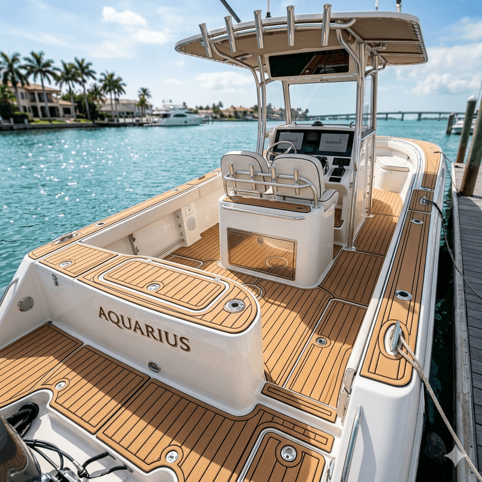

Premium EVA Foam Boat Flooring
& Marine Decking
Precision Underfoot. Luxury Overboard. — Custom EVA foam marine flooring for boats, yachts, and jet skis. UV-resistant, non-slip, saltwater-ready.
EVA Foam Marine Flooring — Built for Boats, Yachts & Jet Skis
Precision-milled, closed-cell EVA foam marine decking designed for superior wet traction, all-day comfort, and uncompromising durability under the harshest saltwater and sun conditions.
Boat & Yacht Flooring
Custom-cut EVA foam marine decking for center consoles, bay boats, flats boats, fishing boats, and luxury yachts. Non-slip, UV-stabilized, saltwater-ready — engineered for Florida waters.
Jet Ski & PWC Decking
High-traction EVA foam mats for jet skis, Sea-Doo, WaveRunner, and personal watercraft. Custom color-matched designs with diamond-groove grip patterns.
RV & Motorhome Flooring
Durable, easy-to-clean EVA foam flooring for luxury motorhomes and travel trailers. Stain-resistant, heat-deflecting, and acoustic-dampening.
Get RV flooring quote →Golf & Utility Cart Flooring
Custom EVA foam flooring for golf carts and utility vehicles — premium comfort, custom logos, and easy cleaning for the fairway or community cruising.
Get cart flooring quote →Digital Precision for Custom Boat Flooring Installation
We use advanced photogrammetry to map your vessel with millimeter accuracy — no paper templates, no guesswork in our marine decking installation process.
1. Digital Capture & 3D Mapping
Using PhotoModeler technology, we digitally scan your boat deck contours with sub-millimeter precision, eliminating old-school paper templating used by most marine flooring contractors.
2. CAD Design & CNC Routing
Your custom EVA foam flooring is engineered in CAD software, then CNC-cut to exact specifications — perfect alignment with hatches, hardware, and complex hull curves.
3. Expert Marine Installation
Our Sarasota-based technicians install your precision-cut EVA foam decking with factory-finish edges and industrial-grade adhesion — built to last through seasons of salt, sun, and water.
Why EVA Foam? The Best Marine Flooring for Florida Boats
Closed-cell EVA foam has become the gold standard for marine decking — here's why boat owners across the Gulf Coast are making the switch.
100% Waterproof
Closed-cell EVA foam won't absorb water, preventing mildew, odors, and delamination. Unlike marine carpet, it stays dry and clean even after heavy saltwater exposure.
Non-Slip, Even When Wet
Micro-dot traction texture provides superior grip for bare feet and shoes alike. Essential for boat decks, swim platforms, and jet ski footwells where safety matters most.
UV-Stabilized & Cool-Touch
Engineered to resist the brutal Florida sun — our EVA foam won't fade, chalk, or crack after years of UV exposure. Stays cooler underfoot than fiberglass or teak.
Fully Customizable
Choose from dozens of colors, faux-teak wood grain patterns, custom logos, boat names, and multi-layer inlays. Every marine flooring project is one-of-a-kind.
Shock-Absorbing Comfort
The dense yet cushioned foam reduces fatigue during long days on the water. Easier on joints, quieter underfoot, and comfortable for barefoot boating.
Easy to Repair & Replace
Individual sections can be replaced without redoing the entire deck. Our digital templates stay on file — order a replacement panel years later and it'll fit perfectly.
How to Clean & Maintain Your EVA Foam Boat Flooring
Proper care keeps your marine decking looking new and extends its life. Follow this simple maintenance routine used by our Sarasota clients.
Fresh Water Rinse
Rinse your EVA foam decking thoroughly with fresh water after every saltwater trip. Salt crystals can dry out the foam surface over time and leave white residue. A quick hose-down prevents buildup and keeps the non-slip texture performing at its best.
Mild Soap Cleaning
Mix warm water with a few drops of mild dish soap or marine-specific cleaner. Scrub gently with a soft-bristle brush (never stiff or wire brushes). Work in small sections, then rinse completely. For stubborn stains like fish blood or bait residue, use a dedicated EVA foam cleaner.
UV Protectant Application
Apply a marine-grade UV protectant spray designed for EVA foam. This adds an extra barrier against Florida's intense sun and helps prevent fading and surface oxidation. Most manufacturers recommend 303 Aerospace Protectant or similar marine products.
Edge Inspection & Touch-Ups
Inspect all edges and seams of your boat flooring for any signs of lifting or peeling. If edges begin to lift, contact RivMar Group for re-adhesion service before water intrusion causes wider delamination. Check high-traffic areas for wear patterns.
⚠ What to Avoid
Need a deeper clean or edge repair? Contact us for EVA foam maintenance service in Sarasota →
Sarasota's Trusted Marine Flooring Contractor
Delivering premium EVA foam boat flooring, yacht decking, and jet ski mats across Florida's Gulf Coast — from Tampa Bay to Naples.
We combine precision digital templating, marine-grade EVA materials, and meticulous installation to give your vessel a finish that looks exceptional and holds up season after season. Every project receives custom-fit templates cut specifically for your boat — never off-the-shelf kits. We proudly serve Sarasota, Bradenton, Venice, St. Petersburg, Tampa, Fort Myers, and the entire Gulf Coast of Florida.

Marine Flooring Services Across Florida's Gulf Coast
Based in Sarasota, we travel to your marina, dock, or boatyard. Our mobile installation team serves the entire Gulf Coast region.
- Sarasota
- Bradenton
- Venice
- Siesta Key
- Longboat Key
- Anna Maria Island
- Tampa Bay
- St. Petersburg
- Clearwater
- Fort Myers
- Cape Coral
- Naples
- Orlando / Central FL
- Florida Keys
- Panhandle / Destin
- Jacksonville
- Miami / Ft. Lauderdale
- Out-of-State (Large Projects)
Don't see your location? Contact us — we accommodate travel for larger vessel projects.
Recent EVA Foam Marine Flooring Projects
See the quality and craftsmanship we deliver on every boat, yacht, and jet ski flooring installation.



Frequently Asked Questions — EVA Foam Boat Flooring
Answers to the most common questions about marine EVA foam decking, installation, and maintenance.
EVA foam boat flooring typically ranges from $14 to $30 per square foot installed, depending on the vessel size, complexity of cuts, number of hatches to work around, and custom design features like logos or multi-color inlays. A typical 22-foot center console averages $2,000–$4,000 for a complete deck. RivMar Group provides free, no-obligation estimates — contact us with your boat make, model, and year for an exact quote.
With proper care, 5 to 8 years under Florida sun and saltwater conditions. Our UV-stabilized, closed-cell foam significantly outlasts budget alternatives and marine carpet. Regular rinsing and UV protectant application (see our Boat Floor Care Guide) can extend the life of your decking. RivMar Group also offers reconditioning and partial replacement services for aging flooring.
Follow our 3-step routine: Daily — rinse with fresh water after saltwater use. Weekly — clean with mild soap and soft brush. Monthly — apply UV protectant spray. Avoid pressure washers, bleach, acetone, and petroleum-based products. Full details in our Boat Floor Care & Maintenance Guide above.
Yes — in most cases, EVA foam installs directly over existing fiberglass or non-skid decks after proper surface preparation (cleaning, degreasing, and light sanding for adhesion). For older decks with peeling paint or severe cracking, we recommend removing the old surface first. RivMar Group evaluates every deck during the free estimate to recommend the best approach.
Yes — in every practical way. EVA foam won't absorb water or hold moisture (no mildew), stays cooler under direct sun, provides better wet traction, cleans more easily, and offers unlimited custom colors, patterns, and logos. Unlike carpet, it doesn't fray, stain permanently, or trap fish hooks and debris. Most boat manufacturers now spec EVA foam from the factory for these reasons.
We serve the entire Florida Gulf Coast from Tampa Bay to Naples — including Sarasota, Bradenton, Venice, St. Petersburg, Clearwater, Fort Myers, and all surrounding communities. We're also available for projects in Central Florida, the Keys, and the Atlantic Coast by request. See our full service area list or contact us about your location.
We custom-cut EVA foam flooring for center consoles, bay boats, flats boats, fishing boats, cruisers, yachts, sailboats, jet skis, Sea-Doos, WaveRunners, and all personal watercraft. We also provide EVA foam solutions for RVs, motorhomes, travel trailers, golf carts, and utility vehicles.
Yes. We specialize in removing worn, peeling, or damaged marine flooring and replacing it with fresh, custom-cut EVA foam. We also offer edge re-adhesion, section replacements, and reconditioning services. Many of our clients upgrade from old marine carpet or failing factory foam. Check our services section or contact us with photos of your current deck.
Get a Free Quote — Marine Flooring in Sarasota & the Gulf Coast
Free estimates for EVA foam boat flooring, yacht decking, jet ski mats, and marine deck repair. We serve Sarasota, Bradenton, Tampa Bay, Venice, Fort Myers, and all Gulf Coast communities.
RivMar Group
Premium EVA Foam Marine Flooring
Sarasota, Florida, USA